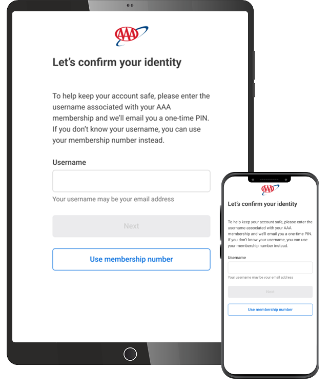
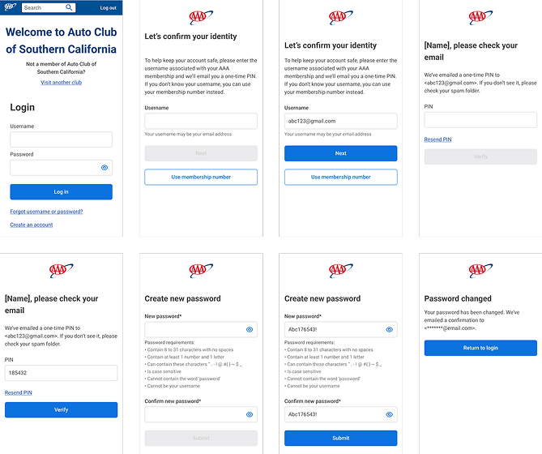
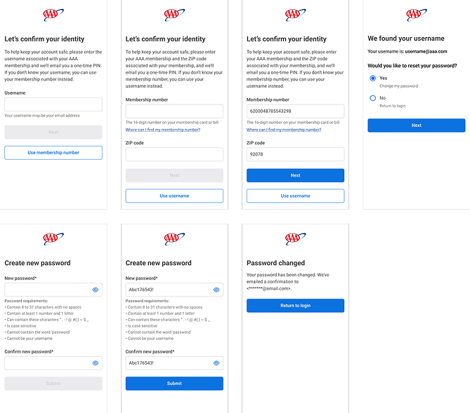

Account recovery experience
Simplifying a high-friction account recovery journey
Key results
Username recovery: up 54%. More members successfully recovered their username.
Membership-number path: up 154%. Members who didn't know their username now had a way through, and used it.
The challenge
Recovering an account can be a frustrating experience, especially when members don't remember the username associated with their account.
The existing experience needed a clearer path for members to verify their identity and recover access, while also supporting those who didn't know their username.
The goal was to simplify the journey, reduce friction, and give members a clear way forward at every step.
The approach
I designed an account recovery experience with two entry points for identity verification.
Username path: Members who remember their username can enter it to begin the recovery process. After verifying their identity with a one-time PIN, they can create a new password and regain access to their account.
Membership number path: Members who don't remember their username can use their membership number and ZIP code instead. After verification, they receive their username and can continue through the password reset process.
Both paths ultimately lead members through the same streamlined password recovery experience.
The solution
Key improvements included: providing an alternative to username-based recovery, breaking the recovery process into simple, manageable steps, clearly communicating what information members need at each stage, using a one-time PIN to verify member identity, providing clear feedback when a username is recovered or a password is successfully changed, and creating a consistent experience across both recovery paths.
The final experience
The resulting flow guides members through: Choose recovery method → Verify identity → Recover username if needed → Create new password → Confirmation.
This approach ensures that forgetting a username doesn't become a dead end and gives members a clear path back into their account.